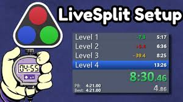
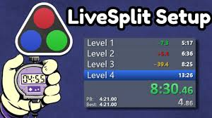

Speedrunning in Video Games
One of the popular ways to play video is by Speedrunning them. Speed runing is when you try to beat the game as fast as possible.
To make shure that no one is cheating when they submitt a run it's required to have a video along side the run. There are to main platforms where people post their videos which are Twitch and YouTube  .
Twitch is used for livestreaming which is where a content creator plays games live to other people online. called LiveSplit  As you can see in the image on the left you can set up what goals there are in a speedrun
to determine if you get a personal best aka PB or a world record. You can see it by looking at the color of the times on the left. If the time is green it means you are on track to get a PB. If the color is red it means you are behind your
PB. If the color is gold it means that you did that split faster than you ever did before.
.
Twitch is used for livestreaming which is where a content creator plays games live to other people online. called LiveSplit  As you can see in the image on the left you can set up what goals there are in a speedrun
to determine if you get a personal best aka PB or a world record. You can see it by looking at the color of the times on the left. If the time is green it means you are on track to get a PB. If the color is red it means you are behind your
PB. If the color is gold it means that you did that split faster than you ever did before.